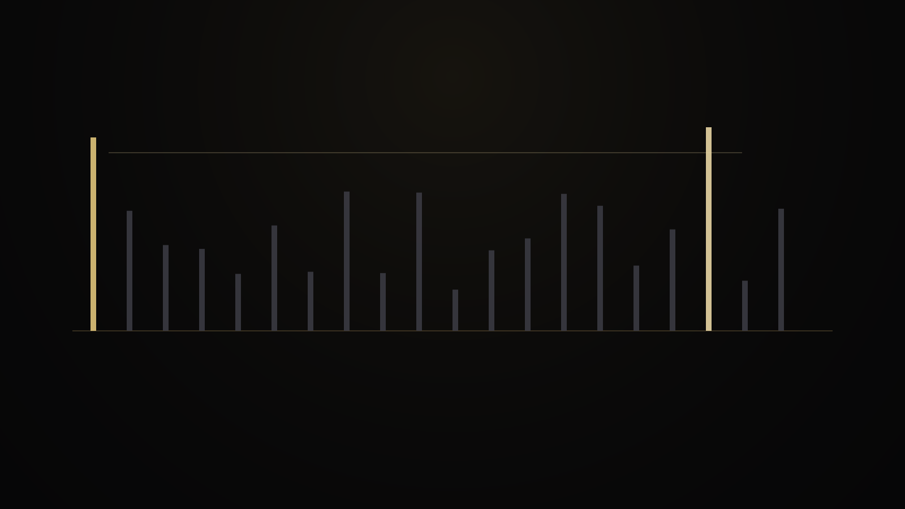
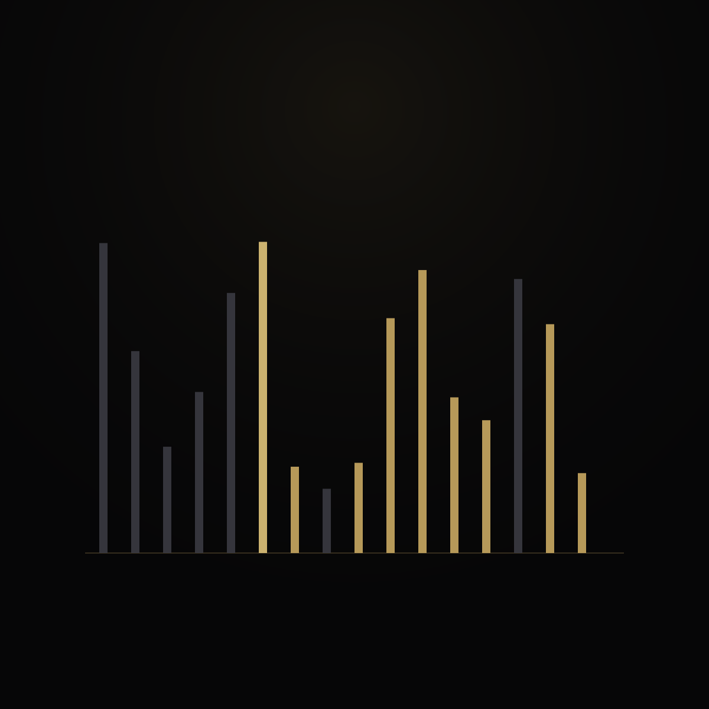
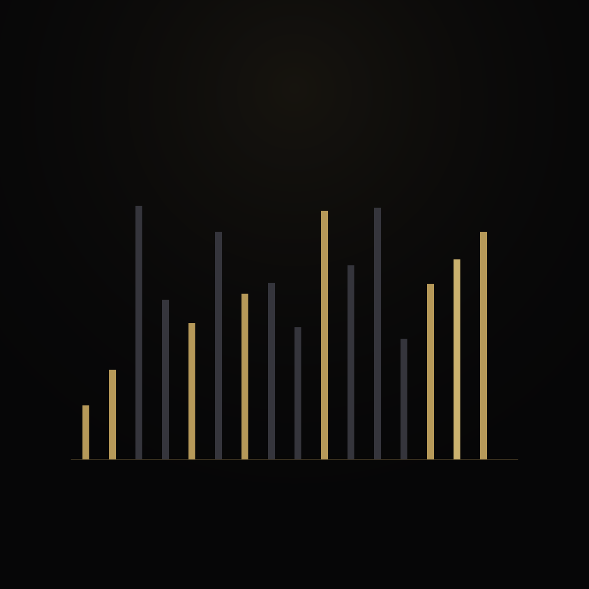
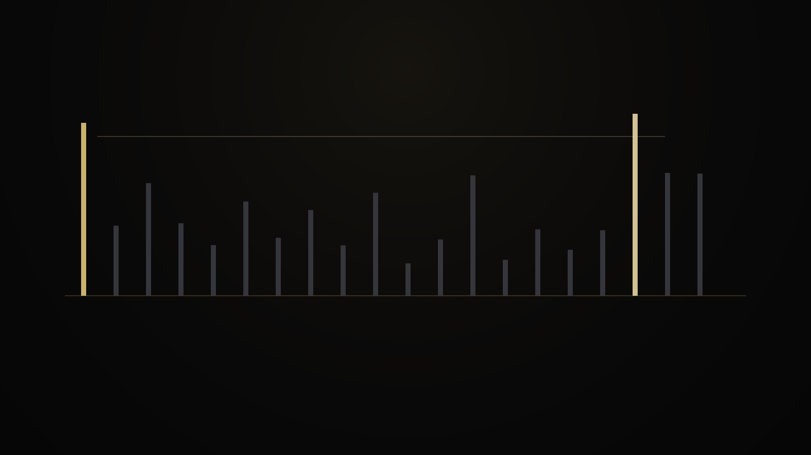
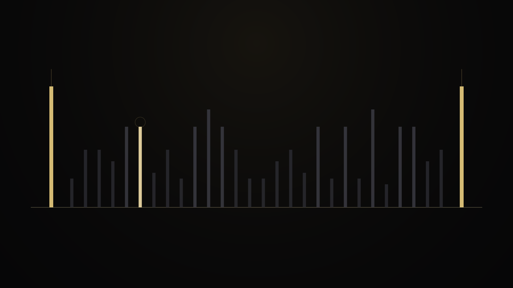
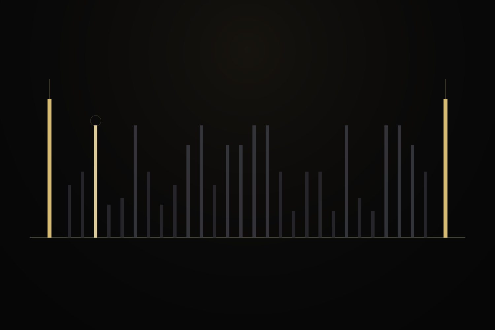
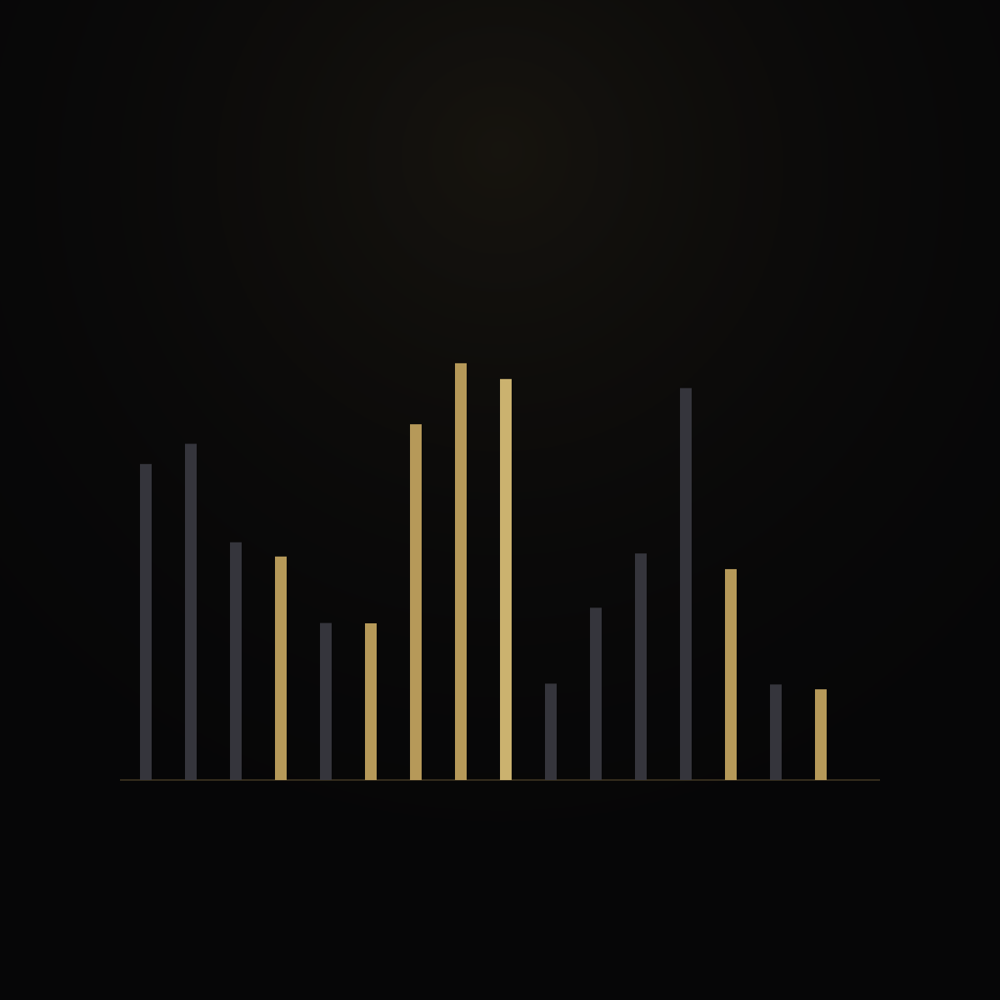
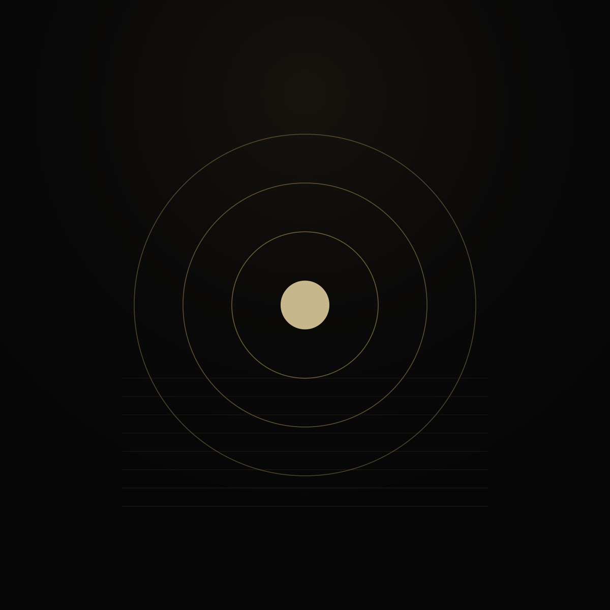
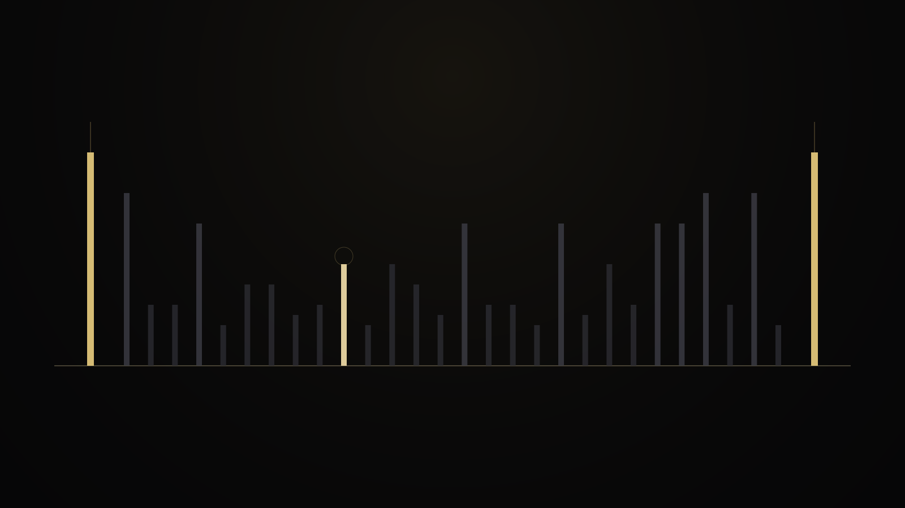
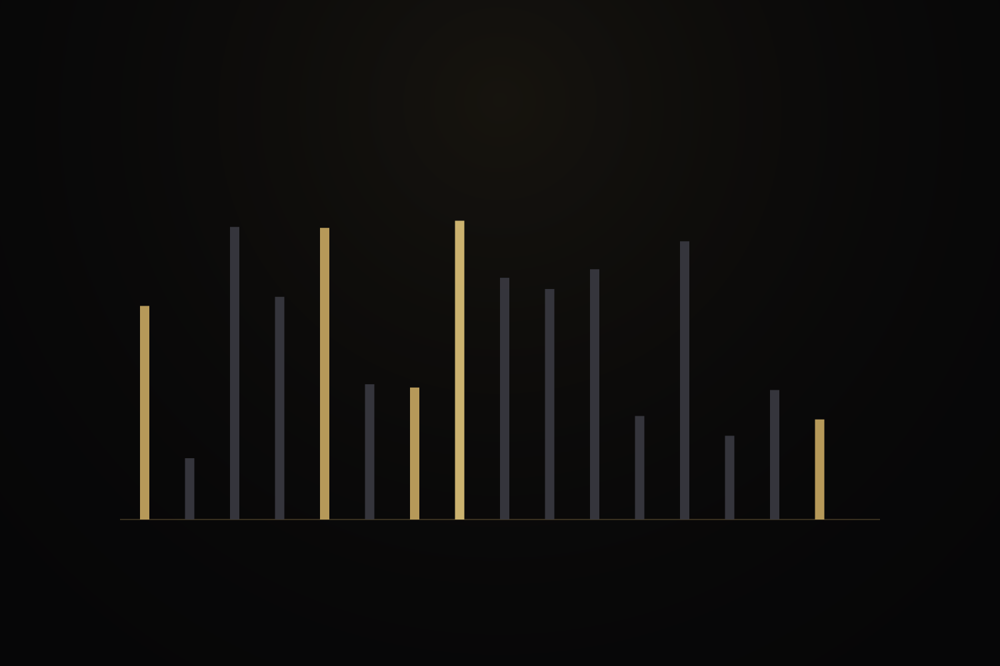

02 · Mechanism
How PGS works
Count the positive divisors of each integer after a known prime. The first time that count is exactly two, you have the next prime. Inside the gap, the first integer with the smallest divisor count is a distinguished landmark.




The walk after a known prime
You are given a prime p. Look at p+1, then p+2, and so on. For each integer, compute how many positive divisors it has. The first later integer with divisor count 2 is the next prime q.

Chamber diagram lab
Endpoints and selected witness
The landmark inside the gap
When the gap has a nonempty interior, find the smallest divisor count that appears, then take the first integer that achieves it. That selected witness is a proved maximizer of a fixed comparison score.




